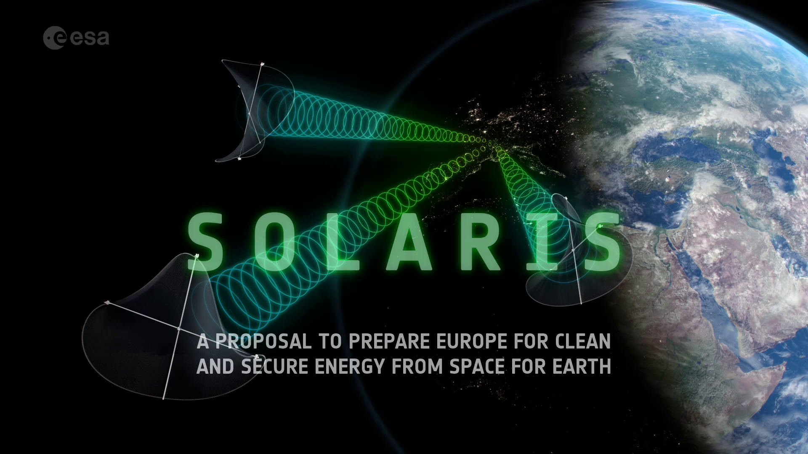
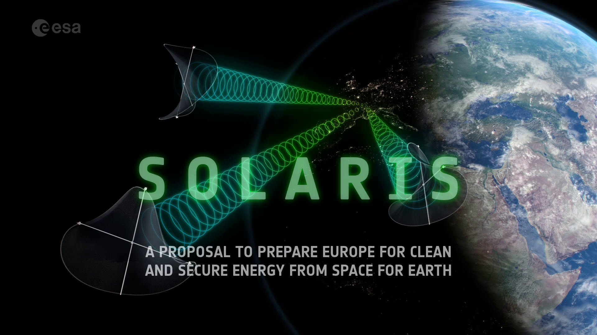

Plan to research solar power from space
The Sun never stops shining in space, and sunlight is much more intense there than on Earth's surface. So what if we could gather that energy up in space then beam it down to Earth?
Recent studies funded by the Preparation element of ESA’s Basic Activities programme, show the concept, called Space-Based Solar Power, is theoretically workable and could support the path to decarbonising the energy sector. However, significant uncertainties and technical challenges remain. In response ESA is proposing a R&D programme to mature the concept and its critical technologies – SOLARIS.
The challenge of decarbonising Europe’s energy sector over the coming few decades is a massive one. International Energy Agency Director Fatih Birol, writing in the Financial Times has said “Nothing short of a total transformation of our energy infrastructure is required — a worldwide undertaking of unprecedented speed and scale…. Almost half the emissions cuts required to move us on to a path to net zero by 2050 may need to come from technologies that are not on the market yet.”
In addition to the needed massive increase of ground-based solar and wind, which are intermittent by nature, there is an urgent need for new grid balancing and back-up power sources, currently provided mainly by fossil-fuels, hydro and nuclear.
Therefore, in the larger context of an energy transition, estimated by the IEA to require investments of trillions of euros, a variety of alternative sources are under study, including geothermal and in the longer-term, nuclear fusion. SOLARIS will help decide if it is feasible to add Space-Based Solar Power – a decades-old concept for delivering clean energy – to this work list.
Solar power satellites in geostationary orbit would harvest sunlight on a permanent 24/7 basis then convert it into low-power density microwaves to safely beam down to receiver stations on Earth. The physics involved means that these satellites would have to be large, on the order of several kilometres in size, and the same being true for the collecting ‘rectennas’ down on Earth’s surface.
This in turn would require technical advancements in areas such as in-space manufacturing and robotic assembly, high-efficiency photovoltaics, high power electronics and radio frequency beam forming. Further research to confirm benign effects of low-power microwaves on human and animal health and compatibility with aircraft and satellites would also be undertaken.
“These are the kind of technical questions that SOLARIS will look into, to explore further the feasibility of the concept, so that Europe could make an informed decision in 2025 on whether to proceed with a Space-Based Solar Power programme in the future,” says Sanjay Vijendran, ESA’s lead for the SOLARIS proposal. “As an added plus, any breakthroughs achieved in these areas will be valuable in their own right, applicable to many other spaceflight endeavours.
“The mistake that is often made is to compare the concept with ground-based solar power, when really space solar offers novel characteristics such as baseload power that actually serves to complement rather than compete with intermittent sources like ground solar and wind. In this sense they could offer an alternative option to nuclear power in future – where studies show that the space-based solution ends up being surprisingly competitive.”
The programme proposal comes at a point when global interest in Space-Based Solar Power is at its highest for decades, with in-orbit demonstrations being prepared in the US, China and Japan.
The UK has established its Space Energy Initiative to develop Space-Based Solar Power, while the European Commission is funding a project investigating large lightweight reflectors redirecting sunlight onto solar farms on the ground called SOLSPACE.
“Considering the climate and energy crises, and the rapid strides we’re making in space capabilities, now is the time to investigate if Space-Based Solar Power can be part of the solution – it’s the responsible thing to do,” adds Dr. Vijendran.
For more information on this programme, intended to bolster Europe's technical leadership in space and proposed for approval at ESA's Council Meeting at Ministerial Level in November, visit the SOLARIS website.
 

Access the video